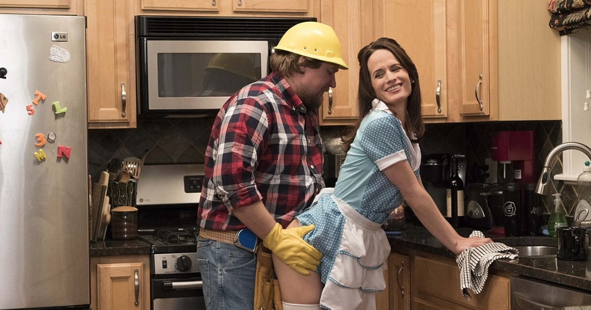

Em O Grifo, baseada no best-seller de fantasia dos autores alemães Wolfgang e Heike Hohlbein, um adolescente precisará aceitar seu destino para proteger aqueles que ama de um poder sombrio. Na série, Mark (Jeremias Meyer) ganha um antigo livro como presente do seu aniversário de 16 anos que revela antigos segredos de família. Depois que o texto chega em suas mãos, seu mundo vira de cabeça para baixo, e, agora, ele precisará desbravar o mundo fantástico e perigoso de Torre Negra. Ao lado de seus amigos Memo (Zoran Pingel) e Becky (Lea Drinda), ele enfrentará muitos desafios na dimensão governada pelo Grifo, uma criatura maligna que tem mais influência em sua vida do que imagina.

Will Trent é uma série de televisão dramática policial processual policial americana baseada na série de romances Will Trent de Karin Slaughter. A série estreou em 3 de janeiro de 2023, na ABC. Em abril de 2023, a série foi renovada para uma segunda temporada com estreia prevista para 20 de fevereiro de 2024.

Lucifer Morningstar (Tom Ellis), o famigerado Senhor do Inferno, se cansa da vida demoníaca que leva no subterrâneo e abandona seu trono para tirar férias em Los Angeles. Lá, ele abre uma casa noturna chamada "Lux" e passa a desfrutar de tudo o que mais gosta: vinho, mulheres e excessos
Uma antologia eclética acompanha grandes atores interpretando histórias complicadas de amor, relacionamento com eletrônicos e sexo. Assista o quanto quiser. O prolífico Joe Swanberg também dirigiu Jake Johnson e Orlando Bloom no filme "Quem Procura Acha".
The Simpsons é uma série animada norte americana transmitida pelo canal FOX. A comédia acompanha a família Simpsons, uma família da classe trabalhadora na cidade desajustada de Springfield. Homer, o pai, trabalha como inspetor de segurança na usina nuclear local; Marge, a mãe, tenta manter a paz na família.